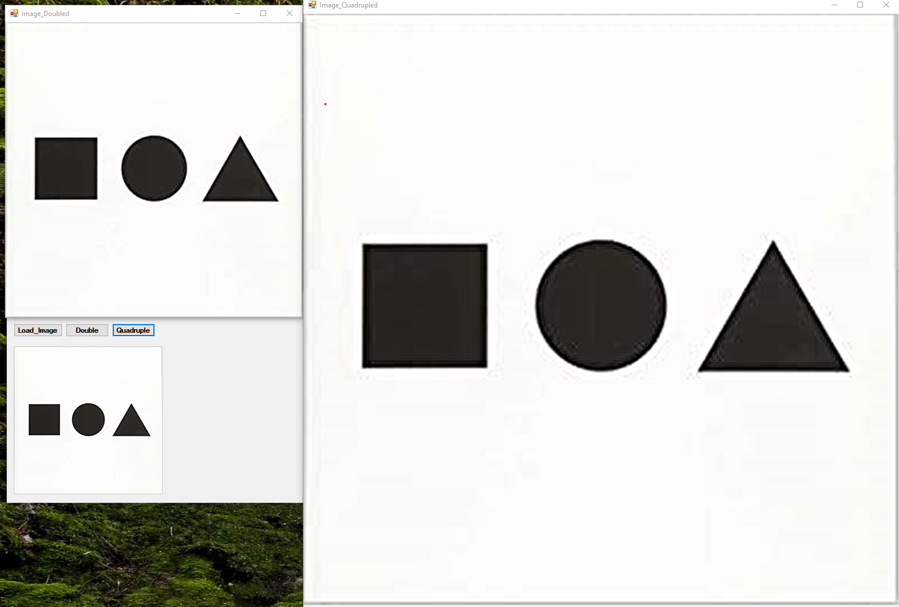

While learning C# and .NET framework, I created a program that utilizes SINC algorithm. I implemented the SINC function from scratch without using any libraries.
I implemented the SINC function by first reading in an image. When the image is doubled I spread out the pixels so that there is an empty pixel in between for both rows and columns. To determine the RGB values of the empty pixels I used specific constant values that relate to the SINC function to multiply by 4 known pixel values to the left and 4 known pixel values to the right of the unknown pixel (used mirroring when encountered an edge). I then summed those values and divided them by 8 finding the average value for R, G, and B for the empty pixel. This process required 2 passes to accommodate for rows and then columns. Because the SINC function "predicts" the RGB values for the enlarged image there is some blurriness introduced to the enlarged image (which is to be expected). To quadruple the image I simply ran the doubled image through the SINC function once more to give me the image at x4 the size.
This project was just more C# and .NET practice. I really like constructing algorithms such as the Canny Edge and the SINC function from scratch. It helps me learn the details about how these complex algorithms work and it makes me appreciate OOP principles such as abstraction even more.